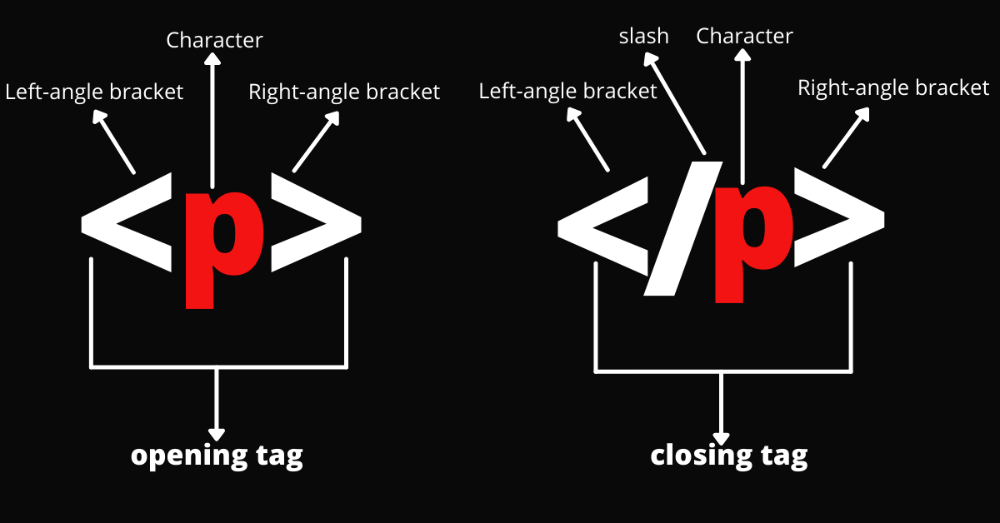
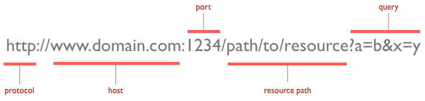
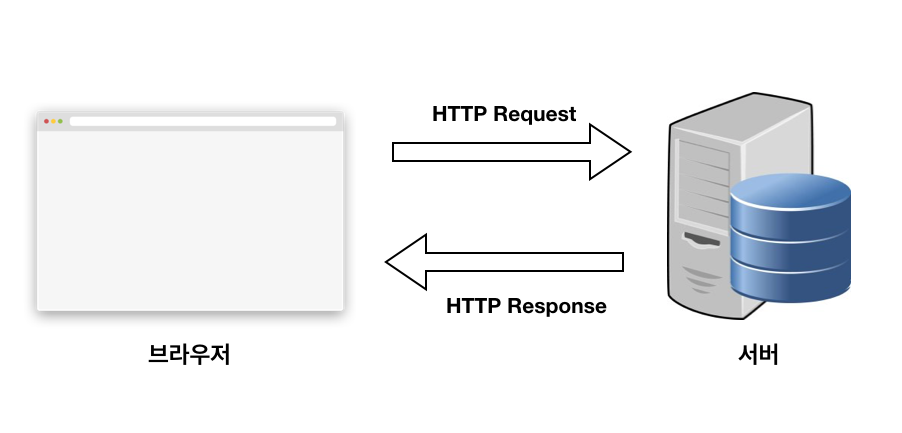

HTML
- 마크업: 하드카피나 소프트카피로 출력될 모든 활자에 관한 텍스트.
- 언어: 하드카피나 소프트카피로 출력될 모든 활자에 관한 스타일 가이드
- 하이퍼텍스트: 관련 항목을 연결하기 위해 구성된 텍스트
아래 이미지는 html 태그의 구조를 보여줍니다
CSS
css란 cascading style sheet의 약자로서, html요소들이 어떻게 보이는지를 정의하는 스타일시트 언어다.
- 인라인: html 요소의 style속성을 사용하여 스타일을 적용하는 방법이다. 해당 요소에만 스타일을 적용할 수 있다.
- 내부 스타일 시트: HTML 문서의 head 태그에 style 태그를 사용하여, HTML 문서에 사용할 스타일을 지정하는 방식이다.
- 외부 스타일 시트: 하나의 별도의 스타일시트 파일을 통해서 HTML 스타일을 적용하는 방식이다.
웹사이트
웹사이트란 인터넷에서 정보를 제공하거나 서비스를 이용할 수 있도록 하는 페이지들의 모음이다.
- 웹 사이트의 구성요소
- 홈페이지
- GNB(global navigation bar)
- LNB(local navigation bar)
- 헤더
- 이 외 등등
HTTP

- http 프로토콜이란?
:HTTP(Hypertext Transfer Protocol)는 웹을 개발하는 사람이라면 알아야 하는 통신 프로토콜입니다. 프로토콜이란 컴퓨터들끼리 HTML파일을 주고받을 수 있도록 하는 소통방식 또는 약속으로 정의되었습니다. 통신 프로토콜을 쉽게 풀어보면 “나는 이렇게 보낼테니 넌 이렇게 받고 난 너가 준거 이렇게 받겠다는 약속” 정도가 되겠네요. 웹에서는 브라우저와 서버 간에 데이터를 주고받기 위한 방식으로 HTTP 프로토콜을 사용하고 있으며 따라서 프런트엔드 개발자라면 필수적으로 알아야 하는 지식이 되었습니다. - URL
:URL(Uniform Resource Locators)은 서버에 자원을 요청하기 위해 입력하는 영문 주소입니다. 아무래도 숫자로 되어 있는 IP 주소보다는 훨씬 기억하기 쉽기 때문에 사용하는 것 같습니다. URL 구조는 아래와 같습니다.

- request/reponse(요청/응답)
:요청과 응답을 이해하기 위해서는 먼저 클라이언트(Client)와 서버(Server)를 이해해야 합니다. 클라이언트란 요청을 보내는 쪽을 의미하며 일반적으로 웹 관점에서는 브라우저를 의미합니다. 서버란 요청을 받는 쪽을 의미하며 일반적으로 데이터를 보내주는 원격지의 컴퓨터를 의미합니다. 따라서 클라이언트(프론트엔드)에서 서버(백앤드)에게 데이터를 요청하고 백엔드는 요청을 처리해서 응답을 줍니다. 이 요청과 응답에 대한 구조와 메세지를 잘 파악하면 대부분의 에러를 잡아낼 수 있습니다.

- request
HTTP 요청은 사실 프론트엔드(클라이언트) 에서 백엔드(서버)에 일(데이터 처리)을 시작하게 하기 위해 보내는 메세지 - 등등
http에 대한 추가설명링크